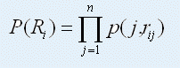
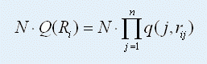
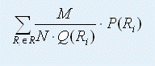
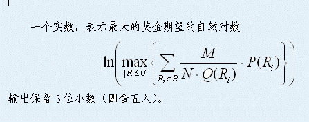

第一行四个整数n, N, M, U（n, U ≤ 104, N, M ≤ 109）。
以下n行，每行六个实数。第i + 1行的六个实数为p(i, 0), p(i, 1), p(i, 2), q(i, 0), q(i, 1)和q(i, 2)，用来描述第i场比赛的相关信息。其中，p(i, 0) + p(i, 1) + p(i, 2) = 1, q(i, 0) + q(i, 1) + q(i, 2) = 1, q(i, j) ≠ 0。
南非世界杯离我们越来越近了，与足球有紧密联系的足球彩票也越来越引起了人们的强烈关注。
了解足球彩票的人可能知道，足球彩票中有一种游戏叫做“胜负彩”，意为猜比赛的胜负。下面是一些与胜负彩有关的术语：
注 ：每一组有效组合数据。
投 注：彩民以现金购买足球彩票的行为。
单式投注：彩民对于所有球队的比赛成绩均只选择一种预测结果的投注方式。投注的数量（注数）为1。
复式投注：彩民对于某些场次的比赛成绩选择两种以上的预测结果的投注方式。投注的数量为复式投注的组合数。例如，某彩民对一场比赛预测了两个结果（例如，胜平），另一场比赛预测了三个结果（胜负平），其他比赛都只预测了一种结果，那么注数就是2×3 = 6。这样的一个复式投注，可以看成一个包含六种单式投注的集合。
胜负彩的玩法一般是这样的。彩票机构指定一轮比赛中的若干场，让彩民去猜每场比赛的结果（胜、负、平）。根据彩民猜中比赛的场次，来确定中奖的额度。
我们现在考虑一个简化的模型。对于一轮比赛，彩民需要竞猜其中n场比赛的结果，每场比赛的胜负平都有一个概率p(i, r)。其中，i表示第i场比赛。r = 0, 1, 2，分别表示比赛结果的（主队）负、平、胜。p(i, r)则表示第i场比赛、结果为r的概率。此外，还有一个概率q(i, r)，表示第i场比赛，投注购买结果为r的概率。
例如，如果q(1,0) = 0.5，我们可以知道第一场比赛有50%的投注会买主队输球。我们假设这n场比赛互不相关，即p(i, r)的结果不会受p(j, r’)的影响，q(i, r)的结果也不会受q(j, r’)的影响（r ≠ r’）。
在这个模型里，我们规定，必须猜中全部n场比赛的结果才能获奖。总奖金为M，由所有获奖的投注平分。因此，对于一个单式投注Ri = {ri1, ri2, …, rin}，rij表示投注Ri对第j场比赛的预测结果，它的中奖概率为：

设投注总数为N，那么中奖的投注总数为：

于是，投注Ri所能得到的奖金的期望（平均意义下能够获得的奖金数）就是：
以上考虑的仅仅是单式投注的情况，即仅考虑单注Ri的中奖情况。对于复式投注，情况要复杂一些。采用复式投注时，投注的是一个集合R = {R1, R2, …, Rk}，其中k是投注的数量。例如，三场比赛，第一场猜“胜负”，第二场猜“平”，第三场猜“负平”，则k = 4，R集合如下：
复式投注R中，只要有一个Ri猜对所有比赛结果，即可中奖。因此，复式投注R所能获得的奖金的期望就是： 我们的问题是，给定n场比赛的信息（胜负平的概率和彩民购买三种结果的概率），以及复式投注中可以购买的最大注数U，要求设计一种复式投注的方案，在不超过最大注数（复式投注的注数k ≤ U）的前提下，使得获得奖金的期望最大。

1 10 10 1
0.3 0.2 0.5 0.7 0.2 0.1
1.609